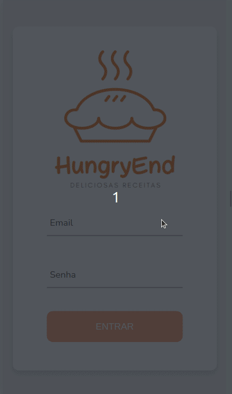
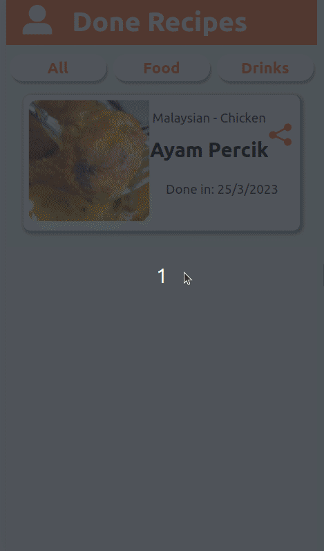
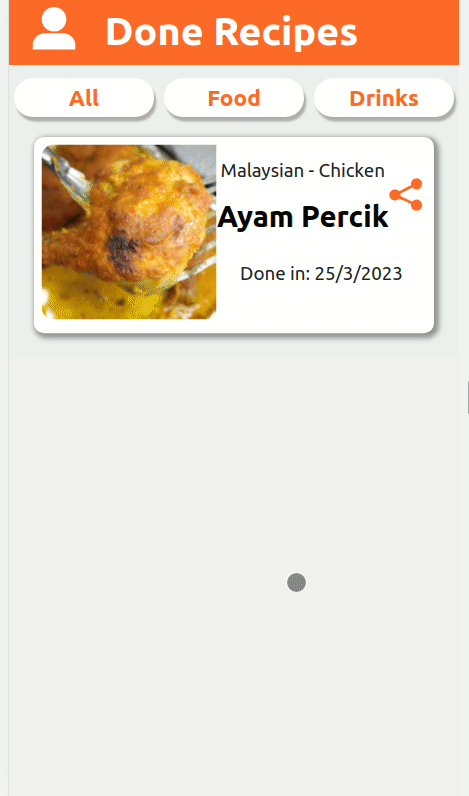
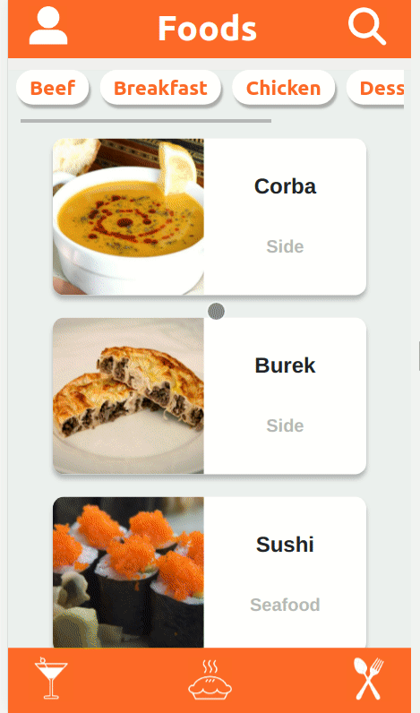

Introdução:
Aqui, é possível visualizar o projeto em pleno funcionamento e explorar suas principais funcionalidades por meio de printscreens e gifs. Caso deseje executar o projeto em sua própria máquina ou queira ver detalhes sobre linguagens e habilidades usadas, basta selecionar a opção "GITHUB" no menu superior, onde encontrará detalhes sobre a instalação do projeto em seu ambiente local. Lembre-se de me contar o que achou do projeto, ficarei imensamente feliz em receber o seu feedback. Ou caso tenha alguma dúvida sobre o projeto, você pode clicar em "DUVIDAS" e me mandar uma mensagem diretamente ou ir em HOME, lá você encontra todas as minhas redes sociais.
Projeto Recipes App:
Esse projeto é um aplicativo mobile de receitas, na qual utiliza o que há de mais moderno dentro do ecossistema React: Hooks e Context API! Nele será possível: ver, buscar, filtrar, favoritar e acompanhar o progresso de preparação de receitas de comidas e bebidas! A base de dados desse projeto são 2 APIs distintas, uma para comidas e outra para bebidas.
Executando Projeto:
Ao executar o aplicativo o usuário tem que fazer login no sistema (não temos uma verificação de dados na etapa de login, é apenas o front).
Após realizar login o usuário tem disponível várias receitas. Na parte superior da tela, existe algumas opções de filtros pré selecionados, que ao clicar em uma delas, o aplicativo retorna todas as receitas para aquela seleção.

Note que foi selecionado a opção Chicken e depois é exibido receitas de frango. Ao clicar em algumas delas, o usuário pode ver informações da receita como ingredientes, um vídeo ensinando como preparar a receita, as intruções para preparar a receita e algumas sugestões de acompanhamento. O usuário também pode marcar a receita como favorita para ver depois ou pode iniciar a receita clicando em Start Recipe.

Depois de clicar em Start Recipe, o usuário vai para uma página de checklist da receita, onde ele pode ir marcando todos os ingredientes disponíveis em sua cozinha e seguir as intruções para finalizar a receita.

Ao finalizar a receita, o usuário vai para uma tela de Done Recipes, onde é exibido todas as receitas finalizadas com informações da data que cada receita foi finalizada.
Você pode compartilhar uma receita que você tenha gostado, basta apenas clicar no ícone que é gerado um link na sua área de tranferência, basta colar onde você quiser compartilhar.
Clicando no ícone de perfil, você vai para as informações do seu perfil. De lá você pode efetuar logout, ver receitas marcadas como favorita(já chegamos lá) ou você pode voltar para a tela inicial e buscar uma nova receita.
O aplicativo também conta com várias receitas para drinks, observe abaixo marcando algumas receitas como favoritas.
Você também pode desfrutar de todas as funções desse projeto, caso queira conhecer a aplicação mais a fundo, volto a te convidar para visitar o repositório do projeto no github, basta clicar aqui